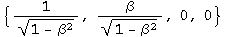
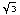

8.033 Problem Set 1, Kinematic Effects of Relativity
Preamble: Initiation functions
There are a few tools required to solve problems in special relativity using quaternions to characterize events in spacetime. The most basic are gamma and a round value for c.
![[Graphics:ps1gr1.
gif]](../../images/SR/problem_set_1/ps1gr1.gif)
Define a function for quaternions using its matrix representation.
![[Graphics:ps1gr4.
gif]](../../images/SR/problem_set_1/ps1gr4.gif)
A quaternion L that perform a transform on a quaternion -
L q[x] = q[x'] - identical to how the Lorentz transformation acts on
4-vectors - Lambda x = x' - should exist. These are described in
detail in the notebook "A different algebra for boosts." For boosts along the
x axis with y = z = 0, the general function for L is
![[Graphics:ps1gr5.
gif]](../../images/SR/problem_set_1/ps1gr5.gif)
Most of the problems here involve much simpler cases for L, where t or x is zero, or t is equal to x.
If t = 0, then
![[Graphics:ps1gr6.gif]](../../images/SR/problem_set_1/ps1gr6.gif)

If x = 0, then
![[Graphics:ps1gr8.gif]](../../images/SR/problem_set_1/ps1gr8.gif)
![[Graphics:ps1gr9.gif]](../../images/SR/problem_set_1/ps1gr9.gif)
If t = x, then
![[Graphics:ps1gr10
.gif]](../../images/SR/problem_set_1/ps1gr10.gif)
![[Graphics:ps1gr11.gif]](../../images/SR/problem_set_1/ps1gr11.gif)
Note: this is for blueshifts. Redshifts have a plus instead of the minus.
The problems are from "Basic Concepts in Relativity" by Resnick and Halliday, 1992 by Macmillian Publishing, "Special Relativity" by A. P. French, 1966, 1968 by MIT, and Prof. M. Baranger of MIT.
R&H 2-9: A moving clock
Q: A clock moves along the x axis at a speed of 0.6c and reads zero as it passes the origin. What time does it read as it passes the 180 m mark on the x axis?
A: A clock measures an interval between two events. The first event occurs at the origin. The second event happens at 180 m in a time of 180 m/v. Calculate the interval by squaring the difference quaternion and then taking the square root of the first term.
![[Graphics:ps1gr12
.gif]](../../images/SR/problem_set_1/ps1gr12.gif)
![[Graphics:ps1gr13.gif]](../../images/SR/problem_set_1/ps1gr13.gif)
The moving clock reads 8 x 10^-7^ seconds.
R&H 2-10: A moving rocket
Q: A rod lies parallel to the x axis of reference frame S, moving along this axis at a speed of 0.6c. Its rest length is 1.0 m. What will be its measured length in frame S?
A: Consider the meter stick at rest in a frame S', one end at the origin, the
other at q[0, 1 m, 0, 0]. We want to boost the stick end quaternion to frame
S. The boost quaternion when t=y=z=0 is
![[Graphics:ps1gr15.gif]](../../images/SR/problem_set_1/ps1gr15.gif) . In frame S',
frame S is moving at -0.6c.
. In frame S',
frame S is moving at -0.6c.
The start of the stick will move for a time equal to the first term of the boosted quaternion, and moved by a distance x = vt/c.
![[Graphics:ps1gr17
.gif]](../../images/SR/problem_set_1/ps1gr17.gif)
The meter stick's length in frame S will be the difference at the same instant in this frame between the boosted stick end and translocated stick start.
![[Graphics:ps1gr18
.gif]](../../images/SR/problem_set_1/ps1gr18.gif)
![[Graphics:ps1gr19.gif]](../../images/SR/problem_set_1/ps1gr19.gif)
The meter stick is length contracted to 0.8 meters in frame S.
R&H 2-13: A fast spaceship
Q: The length of a spaceship is measured to be exactly half its rest length. (a) What is the speed of the spaceship relative to the observer's frame? (b) By what factor does the spaceship's clocks run slow, compared to clocks in the observer's frame?
A: (a) Consider the spaceship at rest, one end at the origin, the other at
q[0, d, 0, 0]. We want to boost the ship end quaternion to the observer's
frame. The boost quaternion when t=y=z=0 is
![[Graphics:ps1gr20.gif]](../../images/SR/problem_set_1/ps1gr20.gif) . In the ship's
frame, the observer is moving at -v/c.
. In the ship's
frame, the observer is moving at -v/c.
![[Graphics:ps1gr21
.gif]](../../images/SR/problem_set_1/ps1gr21.gif)
The start of the ship will move for a time equal to the first term of the boosted quaternion, and moved by a distance x = vt/c.
![[Graphics:ps1gr22
.gif]](../../images/SR/problem_set_1/ps1gr22.gif)
The ship's length in the observer's frame will be the difference at the same instant in this frame between the boosted ship end and translocated ship start.
![[Graphics:ps1gr23
.gif]](../../images/SR/problem_set_1/ps1gr23.gif)
![[Graphics:ps1gr24.gif]](../../images/SR/problem_set_1/ps1gr24.gif)
Solve for beta setting this distance to d/2.
![[Graphics:ps1gr25
.gif]](../../images/SR/problem_set_1/ps1gr25.gif)
Beta is /2 = 0.866.
(b) The factor that the clocks appear to run at different rates is gamma.
![[Graphics:ps1gr28
.gif]](../../images/SR/problem_set_1/ps1gr28.gif)